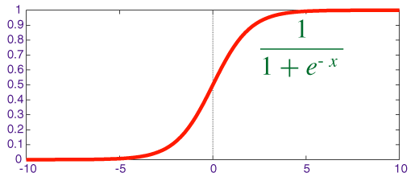
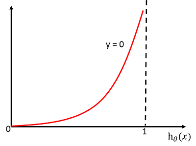

<!DOCTYPE html><html><head><meta name="generator" content="Hexo 3.8.0"><meta charset="utf-8"><title>逻辑回归(LR) | 嘀嗒嘀嗒</title><meta name="viewport" content="width=device-width,initial-scale=1,maximum-scale=1"><meta name="keywords" content="机器学习,逻辑回归"><meta property="og:type" content="article"><meta property="og:title" content="逻辑回归(LR)"><meta property="og:url" content="https://bilicat.top/post/2588d803.html"><meta property="og:site_name" content="嘀嗒嘀嗒"><meta property="og:locale" content="default"><meta property="og:image" content="https://bilicat.top/img/LRsigmoid.png"><meta property="og:image" content="https://bilicat.top/img/LRy1.png"><meta property="og:image" content="https://bilicat.top/img/LRy0.png"><meta property="og:updated_time" content="2019-03-18T08:11:29.771Z"><meta name="twitter:card" content="summary"><meta name="twitter:title" content="逻辑回归(LR)"><meta name="twitter:image" content="https://bilicat.top/img/LRsigmoid.png"><link rel="alternate" href="/atom.xml" title="嘀嗒嘀嗒" type="application/atom+xml"><link rel="icon" href="/images/md_logo.png"><link href="//fonts.googleapis.com/css?family=Source+Code+Pro" rel="stylesheet"><link rel="stylesheet" href="/css/style.css"><link rel="stylesheet" href="/css/highlight.css"></head></html><body><div id="fullpage" class="mobile-nav-right"><div id="wrapper" title="背景图片来自网络"><header id="header"><div id="nav-toggle" class="nav-toggle"></div><div class="head-box global-width"><nav class="nav-box nav-right"><a class="nav-item" href="/">首页</a> <a class="nav-item" href="/archives">归档</a> <a class="nav-item" href="https://github.com/blueberryc">Github</a></nav></div></header><div id="middlecontent" class="global-width sidebar-right"><section id="main"><article id="post-逻辑回归-LR" class="article global-container article-type-post" itemscope itemprop="blogPost"><header class="article-header"><h1 class="article-title" itemprop="name">逻辑回归(LR)</h1></header><div class="article-meta"><a href="/post/2588d803.html" class="article-date"><time datetime="2019-03-18T07:31:55.000Z" itemprop="datePublished">2019-03-18</time></a><div class="article-category"><a class="article-category-link" href="/categories/机器学习/">机器学习</a></div><ul class="article-tag-list"><li class="article-tag-list-item"><a class="article-tag-list-link" href="/tags/机器学习/">机器学习</a></li><li class="article-tag-list-item"><a class="article-tag-list-link" href="/tags/逻辑回归/">逻辑回归</a></li></ul></div><span id="busuanzi_container_page_pv">本文总阅读量<span id="busuanzi_value_page_pv"></span>次</span><div class="article-inner"><div class="article-content article-content-doorframe" itemprop="articleBody"><p>一句话：<strong>逻辑回归假设数据服从伯努利分布，通过极大化似然函数的方法，运用梯度下降求解参数，来达到将数据二分类的目的</strong>。</p><h2 id="假设函数"><a href="#假设函数" class="headerlink" title="假设函数"></a>假设函数</h2><p>逻辑回归算法是将线性函数的结果映射到<code>sigmoid</code>函数中：</p><script type="math/tex;mode=display">h_{\theta}{(x)}=\frac{1}{1+e^{-z}}=\frac{1}{1+e^{\theta^{T}x}}</script><p>函数的形式如下：</p><p></p><p>因此对于输入<code>x</code>分类结果为类别<code>1</code>和类别<code>0</code>的概率分别为：</p><script type="math/tex;mode=display">\begin{align}
P(y=1|x;\theta)&=h_{\theta}{(x)}\\
P(y=0|x;\theta)&=1-h_{\theta}(x)
\end{align}</script><h2 id="极大似然估计"><a href="#极大似然估计" class="headerlink" title="极大似然估计"></a>极大似然估计</h2><p>利用极大似然估计的方法求解损失函数，首先得到概率函数为：</p><script type="math/tex;mode=display">P(y|x;\theta)=(h_{\theta}(x))^y*(1-h_{\theta}{(x)})^{1-y}</script><p>因为样本数据互相独立，所以它们的联合分布可以表示为各边际分布的乘积，取似然函数为：</p><script type="math/tex;mode=display">\begin{align}
L(\theta)&=\prod_{i=1}^{m}{P(y^{(i)}|x^{(i)};\theta)}\\
&=\prod_{i=1}^{m}{(h_{\theta}(x^{(i)}))^{y^{(i)}}*(1-h_{\theta}(x^{(i)}))^{1-y^{(i)}})}
\end{align}</script><p>取对数似然函数：</p><script type="math/tex;mode=display">l(\theta)=\log(L(\theta))=\sum_{i=1}^{m}{(y^{(i)}\log{(h_{\theta}(x^{(i)}))}+(1-y^{(i)})\log({1-h_{\theta}{(x^{(i)})}}))}</script><p>最大似然估计就是要求得使 $l(\theta)$ 取最大值时的 $\theta$ ，为了应用梯度下降法。我们稍微变换一下：</p><script type="math/tex;mode=display">J(\theta)=-\frac{1}{m}l(\theta)</script><h3 id="为什么使用极大似然函数来作为损失函数？"><a href="#为什么使用极大似然函数来作为损失函数？" class="headerlink" title="为什么使用极大似然函数来作为损失函数？"></a>为什么使用极大似然函数来作为损失函数？</h3><ul><li>对损失函数求负梯度之后，参数的更新只与$x_j^i$和$y^i$相关，和<code>sigmoid</code>函数本身的梯度是无关的；</li><li>从损失函数的函数图形来分析：</li></ul><p>对于单个样本来讲，$J(\theta)$所对应的$C(\theta)$为：</p><script type="math/tex;mode=display">C(\theta)=-[y\log{h_{\theta}(x)}+(1-y)\log{(1-h_{\theta}(x))}]</script><p>当$y=1$时：$C(\theta)=-\log{h_{\theta}(x)}$</p><p>其函数图像为：</p><p></p><p>从图中可以看出，对于正类$y=1$，当预测值$h_{\theta}(x)=1$时，损失函数$C(\theta)$的值为0，这正是我们希望得到的。反之，则会给学习算法较大的惩罚。</p><p>当$y=0$时：$C(\theta)=-\log{(1-h_{\theta}(x))}$</p><p>其函数图像为：</p><p></p><p>分析同上。</p><hr><h2 id="存在的缺点"><a href="#存在的缺点" class="headerlink" title="存在的缺点"></a>存在的缺点</h2><ul><li>准确率不是很高，因为形式比较简单，很难去拟合数据的真实分布；</li><li>很难处理数据不平衡的问题，比如正负样本比为10000:1时，把所有的样本都预测为正，也能使损失函数的值比较小；</li><li>处理非线性数据较麻烦</li><li>逻辑回归本身无法筛选特征。有时候用GBDT来筛选特征，然后再用逻辑回归。</li></ul></div><footer class="article-footer">完</footer></div><nav id="article-nav"><div class="article-nav-block"></div><div class="article-nav-block"><a href="/post/8a68f099.html" id="article-nav-older" class="article-nav-link-wrap"><div class="article-nav-title">机器学习之数据预处理</div><strong class="article-nav-caption"></strong></a></div></nav><div id="vcomment" class="comment"></div><script src="//cdn1.lncld.net/static/js/3.0.4/av-min.js"></script><script src="//unpkg.com/valine/dist/Valine.min.js"></script><script>var notify=!1,verify=!1;window.onload=function(){new Valine({el:".comment",notify:notify,verify:verify,app_id:"WUCiaFFoiTM9hj5tkIme0cfM-gzGzoHsz",app_key:"SbVNeAEzvwec8w1ChRGzxjUH",placeholder:"谢谢大家的指正",avatar:"mm"})}</script></article></section><aside id="sidebar"><div class="widget-box"><div class="avatar-box"><h3 class="avatar-name">不期而遇</h3><p class="avatar-slogan">迷途研二狗，酱油算法攻城狮。</p></div></div><div class="widget-box"><h3 class="widget-title">Categories</h3><div class="widget"><ul class="category-list"><li class="category-list-item"><a class="category-list-link" href="/categories/LeetCode/">LeetCode</a></li><li class="category-list-item"><a class="category-list-link" href="/categories/机器学习/">机器学习</a></li></ul></div></div><div class="widget-box"><h3 class="widget-title">Tag Cloud</h3><div class="widget tagcloud"><a href="/tags/LeetCode/" style="font-size:10px">LeetCode</a> <a href="/tags/决策树/" style="font-size:10px">决策树</a> <a href="/tags/机器学习/" style="font-size:20px">机器学习</a> <a href="/tags/滑动窗口/" style="font-size:10px">滑动窗口</a> <a href="/tags/逻辑回归/" style="font-size:10px">逻辑回归</a></div></div><div class="widget-box"><h3 class="widget-title">Archives</h3><div class="widget"><ul class="archive-list"><li class="archive-list-item"><a class="archive-list-link" href="/archives/2019/03/">March 2019</a></li></ul></div></div><div class="widget-box"><h3 class="widget-title">Recent Posts</h3><div class="widget"><ul><li><a href="/post/2588d803.html">逻辑回归(LR)</a></li><li><a href="/post/8a68f099.html">机器学习之数据预处理</a></li><li><a href="/post/49ee0893.html">LeetCode209-最短子数组之和</a></li><li><a href="/post/506d299f.html">信息熵与决策树</a></li></ul></div></div></aside></div><footer id="footer"><div class="foot-box global-width">&copy; 2019 凌度 &nbsp;&nbsp; Powered by <a href="http://hexo.io/" target="_blank">Hexo</a> &nbsp;|&nbsp;主题 <a href="https://github.com/yiluyanxia/hexo-theme-antiquity">antiquity</a><br><script async src="//busuanzi.ibruce.info/busuanzi/2.3/busuanzi.pure.mini.js"></script><span id="busuanzi_container_site_pv">阁下是第<span id="busuanzi_value_site_pv"></span>个访客</span></div></footer><script src="//ajax.googleapis.com/ajax/libs/jquery/2.0.3/jquery.min.js"></script><script src="/js/jquery-2.0.3.min.js"></script><link rel="stylesheet" href="/fancybox/jquery.fancybox.css"><script src="/fancybox/jquery.fancybox.pack.js"></script><script src="/js/script.js"></script></div><nav id="mobile-nav" class="mobile-nav-box"><div class="mobile-nav-img mobile-nav-top"></div><a href="/" class="mobile-nav-link">首页</a> <a href="/archives" class="mobile-nav-link">归档</a> <a href="https://github.com/blueberryc" class="mobile-nav-link">Github</a><div class="mobile-nav-img mobile-nav-bottom"></div></nav></div><script type="text/x-mathjax-config">MathJax.Hub.Config({
        tex2jax: {
            inlineMath: [ ["$","$"], ["\\(","\\)"] ],
            skipTags: ['script', 'noscript', 'style', 'textarea', 'pre', 'code'],
            processEscapes: true
        }
    });
    MathJax.Hub.Queue(function() {
        var all = MathJax.Hub.getAllJax();
        for (var i = 0; i < all.length; ++i)
            all[i].SourceElement().parentNode.className += ' has-jax';
    });</script><script src="https://cdnjs.cloudflare.com/ajax/libs/mathjax/2.7.1/MathJax.js?config=TeX-MML-AM_CHTML"></script></body>